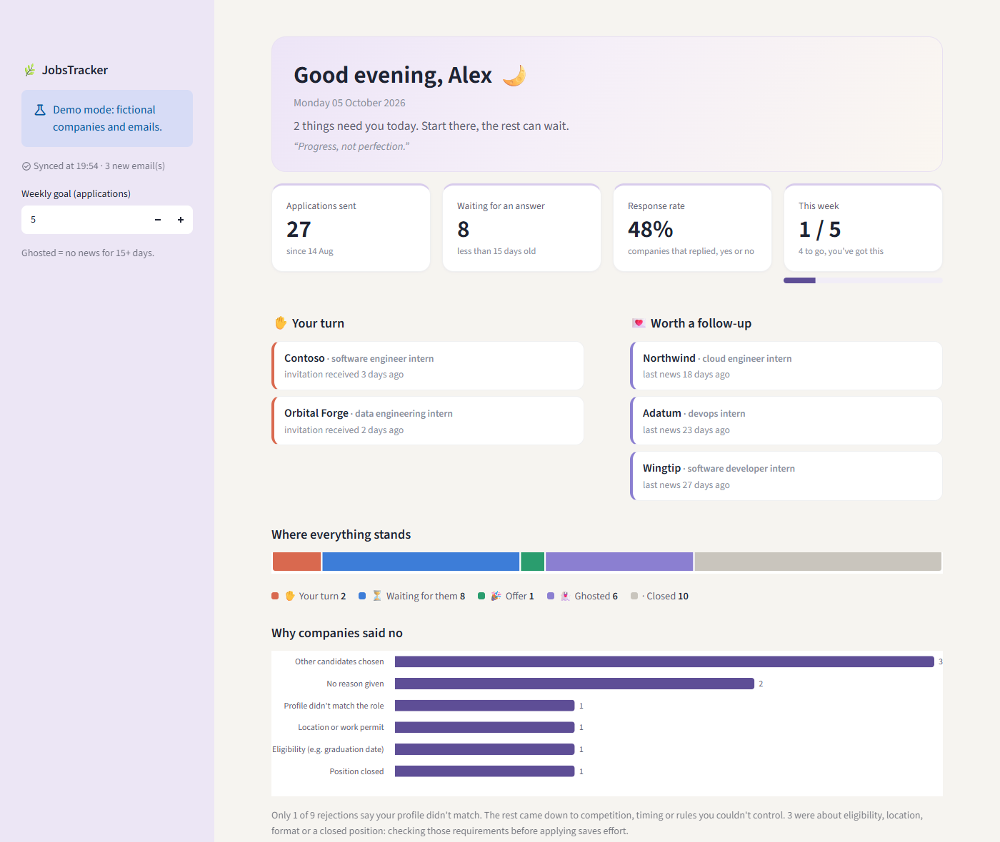

🌿 JobsTracker
A calm morning dashboard for a job search. JobsTracker reads Gmail in read-only mode, finds the emails about job applications, groups them by company and position, and shows where everything stands: what needs attention today, who is still reviewing, who went silent, and why companies said no.

Screenshot with fictional demo data.